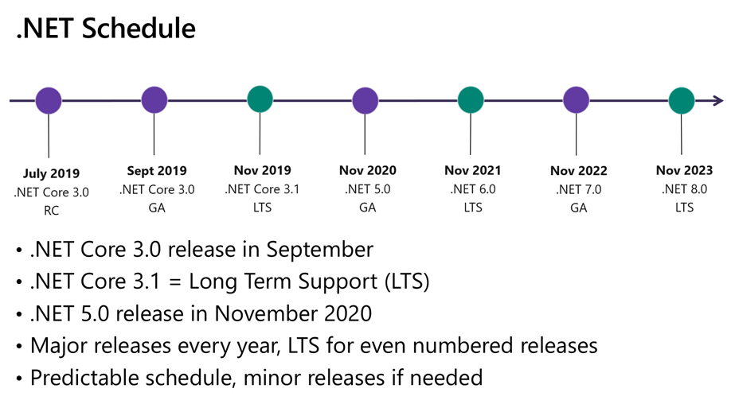
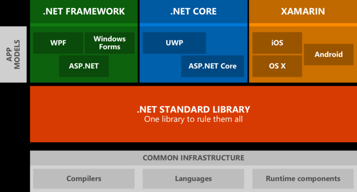
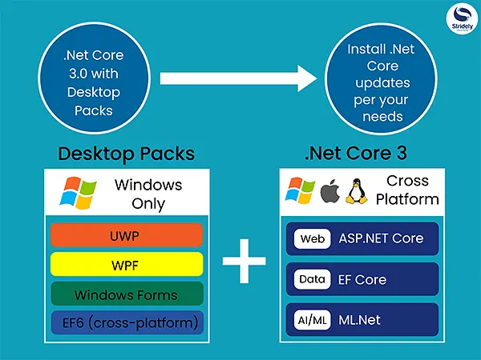

.NET Core 发布的那一天起，它在完成自我刷新的过程，一切为了适应未来，云原生。不仅仅跨平台那么简单。
.NET Core 未来发展路线

我们发现跳过了.NET Core 4.X 避免了和目前.NET Framework4.X命名上的混乱，明年直接命名为了.NET 5 ， 默认还是core，不过.NET 4.8将是最后一个.NET Framework版本,.NET core 才是.NET真正的未来。.NET Core 是微软 .NET 技术的开源、跨平台版本，允许开发者在 Windows、Mac 和 Linux 上使用包括 C＃、F＃和 Visual Basic 等语言。可以说，.NET Core 是仅支持 Windows 的 .NET Framework 的一个跨平台分支，自 2016 年 6 月首次发布后，微软一直在保持同时开发这两个版本。当时微软表示，.NET Core 适用于 ASP.NET Web 应用，以及 Win10 UWP 应用。Windows 桌面应用将继续使用 .NET Framework 。

不过今年发布的.NET Core 3.0 和最近发布的3.1长期版本，重点改进了桌面开发（包括WPF和Windows窗体）和Blazor，可以完全看出.NETcore (将来在.NET Core之上构建的.NET 5)将是.NET的未来，同时能够广泛地支持C#8.0（主要新功能包含有：Nullable的引用类型、各种异步流(Async streams)、范围与文件、以及不同的Switch表达式。）。

生命周期
建议尽可能的迁移到.NET Core 3.1。它对.NET Core进行了多方面的改进。这也是一个LTS版本，将支持三年。其他版本的生命周期：
.NET Core 3.0将于2020年3月3日终止。
.NET Core 2.2的每个生命周期都将在12月23日结束。
.NET Core 2.1的支持将一直持续到2021年8月（这也是LTS版本）。
NETER从.NET Framewrok 过渡到.NETcore 开发，学习成本不会太大，可能对一些新的术语有点迷糊。下面梳理下
.NET Standard:.NET Standard 是一套正式的 .NET API 规范，有望在所有 .NET 实现中推出。推出 .NET Standard 的背后动机是要提高 .NET 生态系统中的一致性。ECMA 335 持续为 .NET 实现行为建立统一性，但适用于 .NET 库实现的 .NET 基类库 (BCL) 没有类似的规范。.NET Standard 可实现以下重要情境：为要实现的所有 .NET 实现定义一组统一的、与工作负荷无关的 BCL API。使开发人员能够通过同一组 API 生成可在各种 .NET 实现中使用的可移植库。减少甚至消除由于 .NET API 方面的原因而对共享源代码进行的条件性编译（仅适用于 OS API）。总之一句话，.NET Standard是支持跨平台.NET库并替代PCL的现代方法
Blazor 是一个基于C#,Razor模板语言和HTML的web框架，可以通过WebAssembly在Web浏览器中运行，不需要使用javascript就可以创建动态网站。而WebAssembly（简称：Wasm）是基于堆栈的虚拟机的二进制中间代码，可在浏览器中执行，并且旨在补充JavaScript。目前已经是w3c的标准了，各大浏览器都已支持。
Electron.NET 可能有人说微软没有提供GUI解决方案，无法真正的跨平台，现在呢，社区受到Electron的启发，Electron.NET诞生了，可以利用.NETcore进行开发。
我们一起拖过控件，一起拥抱.NET Core，一起迎接.NET5......未来可期，接下来准备阅读下这本书......
参考：https://docs.microsoft.com/en-us/dotnet/standard/library-guidance/cross-platform-targeting